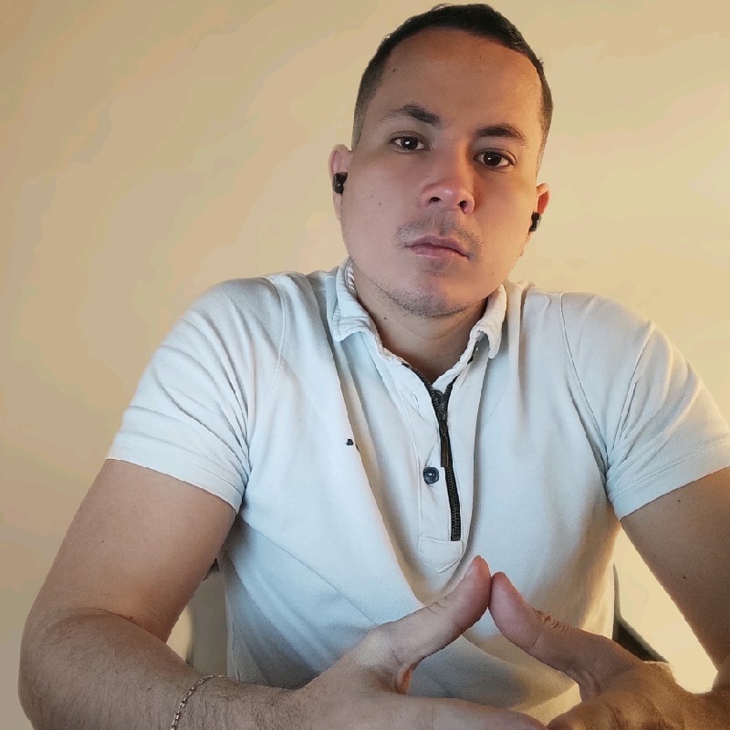

Bienvenido a mi sitio Web

Este es un sitio web personal donde puedes conocer más sobre mí y mi trabajo.
Mi perfil de LinkedInSobre mí
Me llamo Jessel y soy Ingeniero de Sistemas. Tengo 27 años y he trabajado como Consultor SOA y OSB durante 3 años. Me especializo en Consultoria SOA y OSB, y he trabajado con Oracle.
En mi tiempo libre me gusta [Tus hobbies o intereses].
Portafolio
Aquí puedes encontrar algunos de mis proyectos recientes:
Blog
En mi blog escribo sobre Spring Boot y Oracle Service Bus. Aquí puedes leer algunas de mis publicaciones recientes:
Contacto
Si deseas contactarme, puedes hacerlo a través de los siguientes medios:
- Teléfono: +57 3153304765
- Correo electrónico: juljesscar@gmail.com
- Redes sociales: Linkedin